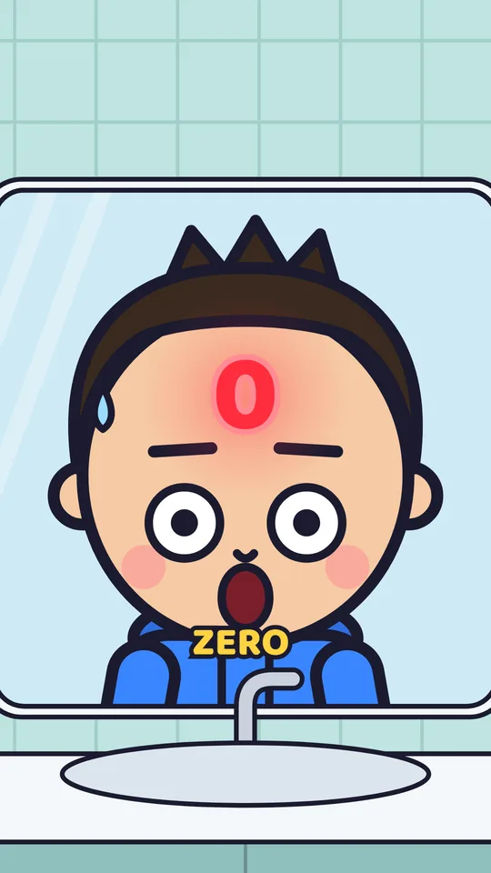
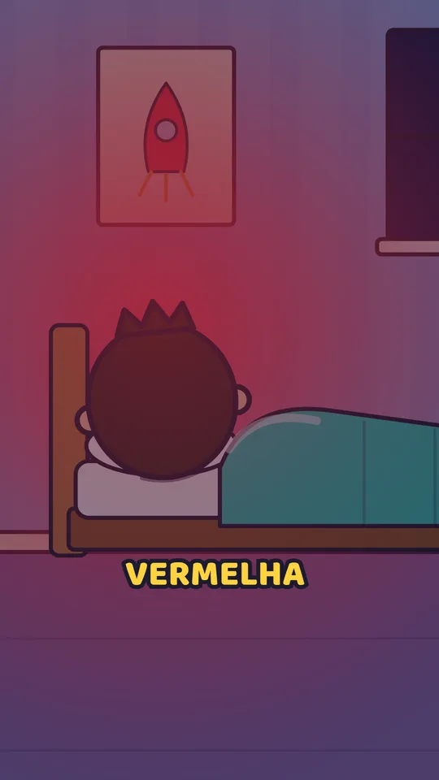
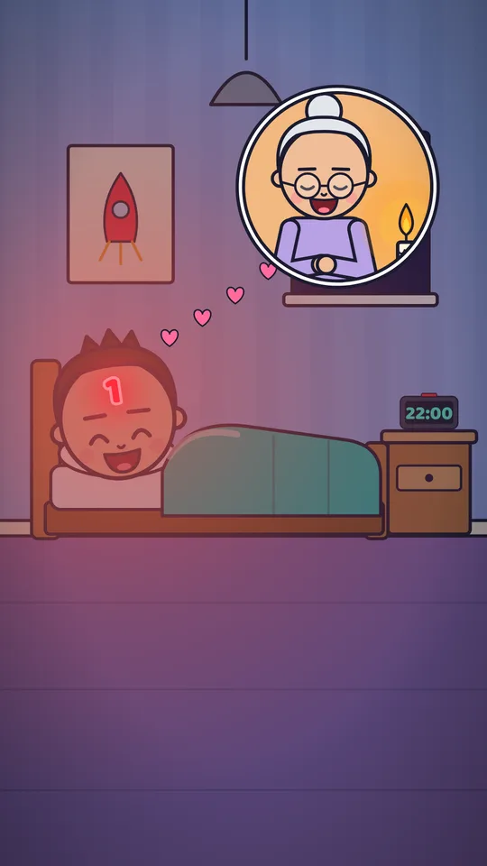

Formato
Vertical 9:16, entre 2 e 3 minutos.
O método completo para criar histórias animadas no formato dos canais dark: os dois caminhos, a fórmula do roteiro, todos os prompts que usamos e o vídeo que saiu deles.
O vídeo de exemplo, feito pelo Caminho B
Canal dark é o canal sem rosto: ninguém aparece, a voz é sintética e a história carrega tudo. Nos Shorts de histórias animadas desse tipo, a mesma fórmula volta sempre. Um mundo com uma regra absurda, narrado em primeira pessoa, com virada emocional no fim. Só o estilo visual muda, entre 3D de blocos e cartoon 2D plano.
Vertical 9:16, entre 2 e 3 minutos.
A primeira frase já é a regra do mundo: "Nesse mundo…", "Nesta cidade…", "No meu mundo…".
Uma voz só, em português, ritmo rápido, sem diálogo encenado. Soa como voz sintética.
Grandes, no terço inferior, de 1 a 3 palavras por vez, brancas com contorno e a palavra de destaque em amarelo.
Cada frase da narração ganha um plano novo, com câmera sempre em movimento. Quase nenhum plano parado.
Música de fundo baixa, sem efeitos sonoros elaborados.
Sobre a ferramenta. Os canais não costumam dizer o que usam, então não dá para afirmar que um vídeo específico foi feito com Claude. O que dá para afirmar é que a fórmula se reproduz com o Claude no papel de diretor, pelos dois caminhos abaixo. O vídeo desta página é a prova do Caminho B.
O Claude não desenha vídeo sozinho. Ele é o diretor e o roteirista: ou comanda um gerador de vídeo conectado, ou escreve o código que desenha e anima as cenas. Voz e montagem entram como etapas separadas.
| Caminho A: diretor e gerador de vídeo | Caminho B: animação por código | |
|---|---|---|
| Estilo que produz | 3D estilo blocos | 2D vetorial plano |
| Onde roda | Claude no app com um conector de geração de vídeo | Claude Code com Remotion |
| Quem gera as imagens | Modelos de vídeo e imagem do conector | O próprio código, em SVG e React |
| Custo variável | Créditos por clipe gerado | Quase zero além da assinatura |
| Consistência de personagem | Difícil: exige imagens de referência | Total: o personagem é sempre o mesmo código |
| Curva de aprendizado | Baixa | Média: terminal e Node.js |
O caminho do estilo 3D de blocos. O Claude escreve e divide em cenas, um modelo de imagem cria os quadros e um modelo de vídeo os anima.
blocky low-poly game avatar, cubic head, toy-like 3D render, bright saturated colors, soft lighting. Repita a mesma frase de estilo em todos os prompts, palavra por palavra. Peça movimento de câmera em todo clipe (slow push-in, orbit left, handheld follow), porque plano parado derruba a retenção.O Claude Code produz o vídeo inteiro: personagens em SVG, animação em React com Remotion, voz local e render em MP4. Não gasta crédito de gerador, o personagem nunca muda de cara e tudo se refaz com um comando. Foi assim que o vídeo desta página nasceu.
A linha de produção do vídeo de exemplo, com os números de cada etapa.
# 1. voz + tempo de cada palavra (Kokoro e Whisper) python tts/gerar.py 1.0 # 2. um quadro de cada cena, para revisar antes do render node tools/quadros.mjs todas --escala=0.33 # 3. render final npx remotion render src/index.ts Short out/short.mp4 --codec=h264 --crf=18






Nenhuma produção sai limpa de primeira. Estes foram os tropeços reais da sessão.
A biblioteca de áudio instalada era incompatível com o decodificador. Solução: reamostrar o áudio para 16 kHz no próprio script e entregar os números direto ao Whisper.
Traço transparente por cima de texto criava riscos dentro dos dígitos. Solução: halo em gradiente radial e contorno opaco.
A fonte vinha da internet a cada quadro e a rede falhou. Solução: guardar o arquivo da fonte dentro do projeto.
O primeiro render completo veio com a letra errada, porque o nome da família estava registrado diferente. Só apareceu porque conferimos um quadro do MP4 final. Corrigido e renderizado de novo.
A história segura a pessoa até o fim. O visual só acompanha. Por isso o roteiro vem primeiro, e a animação obedece a cada frase.
A estrutura é sempre a mesma. Os tempos abaixo são para um vídeo de 2:30, e os exemplos vêm do vídeo desta página.
| Bloco | Tempo | O que acontece | No vídeo de exemplo |
|---|---|---|---|
| Gancho | 0 a 3 s | A regra do mundo em uma frase | "Nesse mundo, um número na testa mostra quantas pessoas estão pensando em você." |
| Regra e consequência | 3 a 20 s | Como a regra funciona e por que importa | O número brilha, não dá para cobrir. Cantor famoso anda com cinquenta mil, bebê já nasce com oito. |
| Problema do narrador | 20 a 50 s | O narrador foge da regra ou sofre por ela | A família muda de cidade e o doze dele cai até zero. |
| Escalada | 50 a 110 s | 3 situações que pioram a tensão | A turma inteira olhando, o "olha o zerado" no recreio, o aniversário sozinho. |
| Virada | 110 a 140 s | Revelação que muda o sentido da regra | Toda noite, às dez em ponto, o zero vira um. É a hora em que a avó reza. |
| Fecho | 140 a 150 s | Frase emocional curta | "E deixo minha avó me acender." |
Quantas palavras pedir. Uma narração rápida em português fica entre 150 e 170 palavras por minuto. No nosso teste, o Kokoro em velocidade 1.0 leu 415 palavras em 2 minutos e 23 segundos, cerca de 174 por minuto contando as pausas. Para 2:30, peça entre 380 e 420 palavras.
Dois conjuntos prontos para copiar. O primeiro é exatamente o que gerou o vídeo de exemplo. O segundo adapta a mesma fórmula para terror de arquivo, no clima dos relatórios de contenção.
Você é roteirista de YouTube Shorts de histórias animadas em português do Brasil, público de 10 a 25 anos. Crie 20 premissas no formato "Nesse mundo, [regra absurda]". Cada regra precisa: - caber numa frase de até 15 palavras; - ter uma consequência visual fácil de animar (cor, número, objeto, marca no corpo); - permitir uma virada emocional no final. Para cada premissa, dê: a regra, o problema do narrador e a virada em uma linha cada. Não use personagens, marcas ou nomes de obras existentes.
Escreva a narração completa da premissa [NÚMERO], em primeira pessoa, para um Short de 2:30. Estrutura: gancho (1 frase) → regra e consequência → problema do narrador → escalada com 3 situações → virada → frase final. Regras: 380 a 420 palavras; frases curtas (máximo 15 palavras); linguagem falada do Brasil; nenhuma frase sem ação ou imagem concreta; a primeira frase é a regra do mundo. Entregue só o texto da narração, uma frase por linha.
Crie o vídeo completo desta narração neste projeto Remotion, seguindo as regras do CLAUDE.md: [COLE A NARRAÇÃO OU APONTE O ARQUIVO] 1. Gere o áudio da narração em português do Brasil com Kokoro (https://thomazrb.github.io/posts/python-tts-kokoro/) e transcreva com Whisper para ter o tempo de cada palavra. 2. Divida em cenas, uma por frase, com a duração da frase narrada. 3. Crie os personagens em SVG como componentes React: estilo 2D vetorial plano, contorno grosso, paleta. Cada um com as expressões neutro, feliz, triste, assustado e bravo. Crie também os cenários que a história pede. 4. Monte cada cena: cenário, personagem com a expressão e a pose da frase, ícones de apoio (ex.: coração partido, números) e movimento de câmera lento (zoom ou pan). Nenhum plano parado por mais de 3 segundos. 5. Legendas palavra por palavra, sincronizadas com o áudio: brancas com contorno, palavra-chave em amarelo, no terço inferior, longe dos botões do Shorts. 6. Antes do render final, salve 6 quadros de momentos diferentes e me mostre. Depois de eu aprovar, renderize em 1080x1920, 30 fps, MP4.
Para ter trilha. O vídeo de exemplo saiu só com a narração. Se quiser música, acrescente um passo: "Música de fundo [ARQUIVO] bem abaixo da voz."
Usando o conector de geração de vídeo ligado a esta conversa, crie o vídeo completo desta narração: [COLE A NARRAÇÃO] 1. Divida a narração em cenas, uma por frase. A duração de cada cena é o tempo da frase narrada. 2. Antes de gerar as cenas, crie uma imagem de referência de cada personagem (de frente, fundo neutro) e de cada cenário, no estilo: "[COLE SUA FRASE DE ESTILO]". Mostre e espere minha aprovação. 3. Para cada cena: gere a imagem usando as referências aprovadas e depois anime em 9:16, sempre com movimento de câmera (push-in lento, órbita, câmera seguindo o personagem). Nenhum plano parado. 4. Gere a narração em português do Brasil com uma única voz [DESCREVA A VOZ] e uma música de fundo calma, bem abaixo da voz. 5. Junte tudo num vídeo vertical 1080x1920 com legendas grandes, palavra por palavra, brancas com contorno preto, palavra-chave em amarelo, no terço inferior. Antes da etapa 3, me diga quantos créditos vão ser gastos e espere meu ok. Se o conector não fizer alguma etapa (voz, música ou montagem), diga qual e me entregue os clipes numerados e o roteiro de cortes para eu montar no editor. Personagens — use estas descrições iguais em todas as cenas: [COLE A BÍBLIA DE PERSONAGENS]
Para este Short, escreva: 5 opções de título com até 50 caracteres (curiosidade, sem entregar a virada), uma descrição de 1 frase que repete a premissa, e 3 a 5 hashtags.
A fórmula é a mesma, com três trocas. A regra do mundo vira a regra de contenção de um objeto anômalo. O narrador é alguém que trabalha perto dele. E a virada muda quem é a ameaça. O tom é burocrático e calmo: o medo vem do detalhe, não do grito.
Você é roteirista de YouTube Shorts de terror de arquivo em português do Brasil, público acima de 16 anos. Crie 20 fichas de anomalias ORIGINAIS no formato de relatório de contenção: "Item [código]: [objeto ou lugar comum] que [regra impossível]". Cada ficha precisa: - de uma regra em até 15 palavras; - de um procedimento de contenção simples, que um funcionário cansado quebraria; - de uma consequência visual fácil de animar (sombra, contagem, porta, sinal, foto que muda, luz que apaga); - de uma virada final que muda quem é a ameaça. Para cada ficha, dê em uma linha cada: o item, a regra de contenção, o erro humano e a virada. Crie uma organização própria, com nome e sistema de códigos seus. Não use o universo, os códigos, os nomes ou os personagens da SCP Foundation nem de outras obras. Sem gore explícito e sem crianças em perigo.
Escreva a narração do item [NÚMERO] como o registro de áudio de um funcionário novo, em primeira pessoa, para um Short de 2:00. Estrutura: gancho (a regra de contenção, 1 frase) → o que o item faz → o turno do narrador → 3 sinais de que a regra está sendo quebrada, cada um pior que o anterior → virada → última frase fria ou cortada no meio. Regras: 300 a 340 palavras; frases curtas (máximo 15 palavras); tom burocrático e calmo, como quem preenche um formulário; o horror vem do detalhe concreto, nunca de adjetivo; nenhuma frase sem ação ou imagem; horários e números exatos; sem gore. A primeira frase é a regra de contenção. Entregue só o texto da narração, uma frase por linha.
Crie o vídeo completo desta narração neste projeto Remotion, seguindo as regras do CLAUDE.md: [COLE A NARRAÇÃO] 1. Gere o áudio em português do Brasil com Kokoro, voz grave e velocidade 0.92, e transcreva com Whisper para ter o tempo de cada palavra. 2. Divida em cenas, uma por frase, com a duração da frase narrada. 3. Direção de arte: 2D vetorial plano, contorno grosso, paleta dessaturada (preto, cinza esverdeado, branco sujo) com um único vermelho de alerta. Granulação leve e vinheta em todas as cenas. 4. Crie os personagens em SVG como componentes React, sempre de uniforme e crachá, com as expressões neutro, tenso, assustado e vazio. O item anômalo nunca aparece inteiro: só sombra, recorte, reflexo ou parte. 5. Elementos de arquivo: cabeçalho de relatório com o código do item, carimbo, tarjas pretas escrito [DADOS APAGADOS], visão de câmera de segurança com horário no canto, contador de dias sem incidente. 6. Monte cada cena com movimento de câmera lento e contínuo (push-in muito lento, leve tremor). A cada sinal da escalada, um corte seco com falha de imagem de 3 quadros. 7. Legendas palavra por palavra: brancas com contorno, palavra-chave em vermelho, no terço inferior, longe dos botões do Shorts. 8. Som: zumbido grave contínuo bem abaixo da voz [ARQUIVO], silêncio total de meio segundo antes da virada. 9. Antes do render final, salve 6 quadros de momentos diferentes e me mostre. Depois de eu aprovar, renderize em 1080x1920, 30 fps, MP4.
Se quiser usar o universo SCP de verdade. O material da SCP Foundation é publicado sob a licença CC BY-SA 3.0. Usar exige dar crédito ao autor de cada artigo, incluir o link e manter a mesma licença no seu vídeo. Criar a sua própria organização e os seus próprios itens, como o prompt T1 pede, evita essa obrigação e deixa o canal com identidade.
Desenho 2D plano e colorido, no clima de Bluey e Galinha Pintadinha, em que ninguém fala. A história anda só com gestos, música e efeitos sonoros de comédia física, como nos desenhos clássicos de gato e rato. Sem dublagem, o mesmo vídeo serve para qualquer país.
É a faixa que o Seedance 2.0 gera por vez, segundo a própria ByteDance. Uma piada visual cabe inteira em um clipe.
O modelo gera vídeo e som juntos: ambiente, efeitos e fala. Por isso o prompt precisa dizer, com todas as letras, que não há fala.
Aceita até 9 imagens de referência por geração. No 2D plano, o quadro inicial decide o estilo mais do que o texto.
Confira na sua plataforma. Os limites mudam conforme a versão do modelo e o serviço onde ele roda. Recursos como quadro final de referência existem em algumas plataformas e em outras não.
Os dois primeiros são para o Claude. O terceiro é o modelo de prompt para o Seedance, em inglês, que é como os modelos de vídeo costumam responder melhor.
Você é diretor de arte de animação infantil 2D para crianças de 2 a 6 anos. Crie um elenco ORIGINAL de 3 personagens animais e 2 cenários para uma série sem fala. Para cada personagem: nome, animal, forma geométrica básica, 3 cores em hexadecimal, tipo de olho, um acessório e um jeito de andar. Para cada cenário: lugar, 4 cores em tons pastel e 3 objetos que podem virar piada visual. Estilo: formas simples e arredondadas, cores chapadas, contorno fino e limpo, sem sombra realista, sem texto na imagem. Não use nem imite personagens, nomes ou marcas de obras existentes. No fim, escreva em inglês um prompt de imagem para a folha de referência de cada personagem: frente, lado e 4 expressões, fundo branco liso.
Escreva um episódio de 50 segundos com os personagens da bíblia acima, SEM NENHUMA FALA, narração ou texto na tela. Estrutura: objetivo simples (5 s) → tentativa 1 dá errado (10 s) → tentativa 2 dá errado de um jeito maior (10 s) → tentativa 3 quase dá certo e vira a maior bagunça (15 s) → final carinhoso em que os personagens se ajudam (10 s). Regras: comédia física leve, sem ninguém se machucar de verdade, sem susto, sem arma, sem nada que uma criança possa imitar e se ferir. Entregue uma tabela com uma linha por clipe: duração (de 4 a 12 s), ação única do clipe, emoção de cada personagem, movimento de câmera e a lista dos efeitos sonoros na ordem em que acontecem.
[IMAGE 1: start frame] [IMAGE 2: character reference sheet] Flat 2D children's cartoon, simple rounded shapes, flat color fills, thin clean outlines, pastel background, no shading, no text on screen. Keep the character exactly as in the reference sheet. Action: [ONE ACTION ONLY, e.g. "the yellow duck tiptoes toward the cake, slips on a banana peel, spins twice and lands sitting, dizzy, with stars circling its head"]. Acting: exaggerated pantomime, clear silhouette, squash and stretch, big readable expressions. Camera: [e.g. "locked wide shot, slow push-in on the landing"]. Duration: [6] seconds. Vertical 9:16. Audio: NO dialogue, NO narration, NO singing, NO human voices. Only classic slapstick cartoon sound effects synced to the action: [e.g. "pizzicato tiptoe steps, slide whistle on the slip, boing on the bounce, cymbal crash on the landing, twinkling chimes for the dizzy stars"]. Light playful orchestral music underneath, low volume.
| Ação na tela | Efeito | Como pedir em inglês |
|---|---|---|
| Andar na ponta dos pés | Cordas beliscadas, uma nota por passo | pizzicato tiptoe steps |
| Escorregar ou cair | Apito deslizante descendo | slide whistle down |
| Quicar ou pular | Mola | boing spring |
| Bater ou trombar | Prato de bateria ou bumbo | cymbal crash, bass drum hit |
| Correr em disparada | Escala rápida de xilofone | fast xylophone run |
| Ficar tonto | Sininhos girando | twinkling chimes, bird tweets |
| Ter uma ideia | Um toque de sino | single bell ding |
| Passar voando | Sopro rápido | quick whoosh |
Regras de conteúdo infantil. Trilhas e efeitos de desenhos famosos têm dono: use bibliotecas livres ou o som gerado pelo modelo. No YouTube, marque o vídeo como feito para crianças, o que desliga comentários e anúncio personalizado. E prefira poucos episódios bem cuidados a muitos parecidos, porque conteúdo infantil repetitivo é alvo direto das políticas de qualidade da plataforma.
O teste responde a uma pergunta: qual dos dois caminhos dá mais retenção por hora de trabalho? Você publica 3 vídeos de cada estilo, com a mesma fórmula de roteiro, e compara. As caixas ficam marcadas neste navegador.
Uma variável por rodada. Se trocar estilo e duração ao mesmo tempo, você não sabe o que causou a diferença. Seis vídeos são pouco para conclusões firmes: trate o resultado como direção, não como prova.
Tudo nesta página saiu de uma única conversa com o Claude Fable 5.2 no Claude Code: as 20 premissas, a narração, o projeto Remotion, o vídeo e este tutorial. Os números abaixo foram lidos do registro da própria sessão.
| Etapa | Tempo de relógio | O que entrou |
|---|---|---|
| Premissas e narração | 8 min | Prompts 1 e 2, com a contagem de palavras conferida frase a frase |
| Do pedido do vídeo aos 6 quadros | 31 min | Instalação, voz, transcrição, 47 cenas, legendas e duas rodadas de revisão de quadros |
| Render final | 2 min 24 s | Feito três vezes. A fonte errada e uma legenda que sobrava 2 quadros depois de cada corte só apareceram ao conferir o MP4 |
A sessão rodou em um plano de assinatura, então não houve cobrança por token. Para dar uma ordem de grandeza, a última coluna mostra quanto o mesmo uso custaria na API, pelos preços de tabela do Claude Fable 5.2: 8 dólares por milhão de tokens de entrada, 40 por milhão de saída e 0,20 por milhão de leitura de cache.
| Medida | Produção do vídeo | Tutorial e publicação |
|---|---|---|
| Respostas do modelo | 36 | 30 |
| Chamadas de ferramenta | 76 | 63 |
| Tokens de saída | 190.260 | 80.327 |
| Tokens gravados em cache | 269.786 | 206.517 |
| Tokens lidos do cache | 7.607.049 | 13.243.810 |
| Equivalente na API | US$ 12 a 13 | US$ 8 a 9 |
Como ler esses números. A leitura de cache parece enorme porque cada resposta relê a conversa inteira, mas é a parte barata: no vídeo, ela responde por cerca de 1,50 dólar. Mais da metade do custo equivalente do vídeo vem dos tokens de saída, ou seja, do código e do raciocínio que o modelo escreveu. A faixa de valores existe porque gravar em cache custa de 1,25 a 2 vezes o preço de entrada, conforme a duração do cache. A coluna do tutorial foi fechada pouco antes de publicar, então ficou um pouco abaixo do total real.
A métrica principal é a porcentagem de pessoas que viram o Short em vez de deslizar, que o YouTube Studio chama de "Visualizado vs. deslizado". Depois, a porcentagem média assistida. Uma linha por vídeo.
| Vídeo | Caminho | Horas gastas | Custo | Visualizações | Viu vs. deslizou | Média assistida | Curtidas por visualização | Inscritos ganhos |
|---|---|---|---|---|---|---|---|---|
| 1 | A | |||||||
| 2 | B | |||||||
| 3 | A | |||||||
| 4 | B | |||||||
| 5 | A | |||||||
| 6 | B |
A fórmula pode se repetir. O conteúdo, os personagens e os direitos de cada peça são responsabilidade de quem publica.
Não copie personagens, logos ou nomes de jogos e de obras. Descreva um estilo genérico e crie personagens próprios. Além do risco de direitos autorais, isso protege o canal de denúncias.
O YouTube pede que você declare conteúdo alterado ou sintético quando ele parece real. Animação claramente fantasiosa em geral não entra nisso, mas confira a regra atual no YouTube Studio ao publicar.
Vídeos em massa quase idênticos podem ser barrados no Programa de Parcerias. Varie histórias, personagens e cenários.
Use música livre de direitos e confira se o plano da ferramenta de voz e do gerador de vídeo permite uso comercial. O Remotion é gratuito para pessoas e equipes pequenas, e empresas maiores precisam de licença paga.
Vídeo para crianças precisa ser marcado como tal, não pode mostrar nada perigoso de imitar e não deve depender de personagens ou músicas de outras obras.
Sem gore explícito e sem crianças em perigo. Se usar material do universo SCP, cumpra a licença: crédito, link e mesma licença no seu vídeo.
pf_dora, feminina, e pm_alex e pm_santa, masculinas. Também dá para usar outra ferramenta de voz. O que importa é manter uma voz só no canal inteiro.Nesse mundo, um número na testa mostra quantas pessoas estão pensando em você. Ele brilha em vermelho, bem no meio da testa. Não dá pra cobrir com boné nem com franja. Na rua, todo mundo olha sua testa antes do seu rosto. Cantor famoso anda com cinquenta mil piscando. Bebê recém-nascido já sai do hospital com oito ou nove. Na minha cidade antiga, minha testa marcava doze. Aí meu pai arrumou emprego longe e a gente encaixotou a casa. Na primeira parada da estrada, olhei no retrovisor: nove. Quando o caminhão estacionou na rua nova, eu tinha dois. Uma semana depois, escovei os dentes e olhei no espelho. Zero. Um zero redondo, vermelho, do tamanho de uma moeda. Na primeira aula, a professora me colocou na frente da turma. Trinta cabeças viraram e sessenta olhos subiram pra minha testa. Sentei na última carteira e puxei o capuz até o nariz. O zero atravessou o pano e ficou brilhando no tecido. No recreio, os meninos comparavam número igual figurinha. Um deles apontou pra mim e gritou: "Olha o zerado!" Comi meu lanche atrás da quadra, de costas pro pátio. No meu aniversário, minha mãe comprou um bolo pequeno. Acendi a vela sozinho e fiquei vigiando o celular. Meus amigos antigos postaram foto na piscina, todos rindo. Corri pro espelho do banheiro com a vela na mão. Zero. Soprei a vela ali mesmo, em cima da pia. Naquela noite, apaguei a luz e deitei de cara pra parede. Foi aí que a parede ficou vermelha. Levantei num pulo e corri pro espelho. O zero tinha sumido da minha testa. No lugar dele, um número um, fininho, aceso. Olhei o relógio: dez da noite em ponto. Um minuto depois, o um apagou e o zero voltou. Na noite seguinte, sentei na frente do espelho e esperei. Dez horas: o um acendeu de novo. Anotei num caderno, noite por noite. Trinta linhas, sempre o mesmo horário. Então lembrei da casa da minha avó. Lembrei do rádio desligando e do chinelo dela no corredor. Toda noite, às dez, ela ajoelha na beira da cama. Ela acende uma vela e fala o nome de cada neto. Às dez em ponto, liguei pra ela com a mão tremendo. Ela atendeu sussurrando: "Espera, meu filho, tô no meio da reza." No espelho, o um brilhava forte. Hoje eu ainda atravesso o corredor da escola com zero. Mas às dez da noite eu apago a luz do quarto. E deixo minha avó me acender.
Tudo o que você precisa está nesta página: os prompts, o método e um exemplo de ponta a ponta. Nada para comprar além do que você já usa.